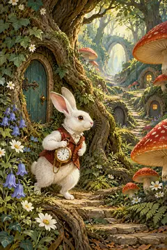
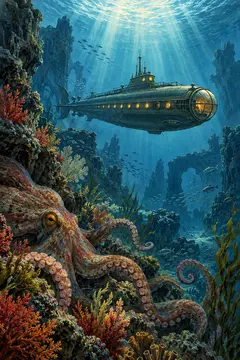

A Christmas Carol
Charles Dickens · a-christmas-carol
Оригинальные AI-иллюстрации проекта, не обложки конкретных изданий. Внешние изображения-референсы не использовались.
Ни одна обложка пока не утверждена. Здесь показаны реальные миниатюры 240×360; нажатие открывает WebP 600×900. Сервер и JavaScript не нужны.
Проверь согласованность серии, узнаваемость сюжета, контраст, детали в миниатюре и отсутствие нежелательного сходства с изданиями/экранизациями. Проверка этих файлов не заменяет просмотр в приложении.
Charles Dickens · a-christmas-carol
Jane Austen · pride-and-prejudice
Mary Shelley · frankenstein
Lewis Carroll · alices-adventures-in-wonderland

Jules Verne · twenty-thousand-leagues-under-the-seas

Provenance и размеры/checksums · Точные запросы генерации · Неутверждённый manifest